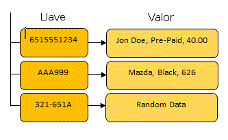
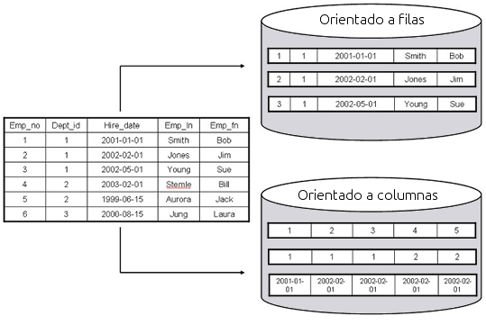
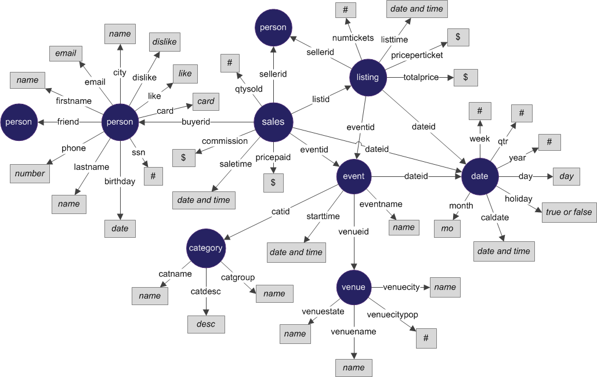

Universidad Nacional Experimental Del Táchira
Decanato De Docencia
Dpto. Ingeniería Informática
NoSQL
Conocimientos previos
- Algoritmos de indexación.
- Conceptos básicos de base de datos.
- Conocimientos básicos de sistemas de archivos.
- Funcionamiento de sistemas distribuidos.
Objetivo de la clase
- Introducción a los distintos tipos de B.B.D.D. NoSQL.
- Situaciones donde se debe utilizar B.B.D.D. NoSQL.
- Ventajas y desventajas.
- Consultas básicas con MongoDB.
Introducción
Sistemas gestores de BBDD
Ya las BBDD han evolucionado en:
- RDBMS: Oracle, Postgres, MySQL, SQL Server.
- OLAP: Hadoop, Vertica, Netezza.
- NoSQL: Cassandra, CouchDB, MongoDB.
Introducción
Evolucion BBDD
- Aparecieron en los años 70.
- Se crearon estándares para definir como comunicarse (DDL, SQL).
- Se convirtieron en la solución para la gestión de datos.
- Con la aparición de la web, grandes centros de datos tuvieron problemas con el rendimiento.
- La solución a ello fueron las base de datos NoSQL.
Objetivos de la B.D. NoSQL
-
El objetivo principal es proveer:
- Escalabilidad.
- Rendimiento.
- Alta disponibilidad.
¿Qué es NoSQL?
Not Only SQL
- NoSQL agrupa una variedad de diferentes tecnologías de B.B.D.D., desarrolladas como respuesta ante el gran volumen de datos almacenados sobre usuarios, objetos y producto, la frecuencia con la que la data es accedida, rendimiento y necesidades de procesamiento.
Fuente: MongoDB Inc. (2014)
¿Qué es NoSQL?
Not Only SQL
- Por otra parte, las base de datos relaciones no fueron diseñadas para soportar la escalabilidad y agilidad que enfrentan aplicaciones modernas, y no fueron construidas para tomar ventaja de lo barato del almacenamiento y poder de procesamiento disponible en la actualidad.
Fuente: MongoDB Inc. (2014)
¿Qué es NoSQL?
Not Only SQL
- Es una base de datos no relacional que escala mejor.
- No utiliza SQL para consultar los datos.
- No tiene un esquema definido.
- Son muy especializadas y tienen limitaciones
Fuente:
Guru 99. (2014)
NoSQL
Ofrece
- Lenguaje de consultas distinto a SQL.
- Rápido rendimiento.
- Escalabilidad horizontal.
No ofrece
- No tiene soporte para Joins.
- No posee soporte para transacciones complejas.
- No soporta constrains.
- No garantiza ACID (Atomicidad, Consistencia, Isolación, Durabilidad).
Categorías de NoSQL
- Key-value.
- Orientadas a columnas.
- Orientadas a documentos.
- Grafos
Key-value (Clave-valor)
- Basadas en la publicación Dynamo de Amazon.
- El modelo de datos es una colección de pares de Clave/valor.
- Ejemplo: Riak, Voldemort, Tokyo.

Orientadas a columnas
- Basadas en la publicación de Tablas Grandes de Google.
- El modelo de datos es una gran tabla con muchas columnas.
- Ejemplo: HBase, HyperTable, Cassandra.

Orientadas a
documentos
- Inspiradas en Lotus Notes.
- El modelo de datos es una colección de pares de Clave/valor.
- La clave es generada en base al contenido del documento.
- Ejemplo: CouchDB, MongoDB.
De grafos
- Inspiradas en la teoría de grafos y Euler.
- El modelo de datos son nodos, relaciones, clave y valor según las 2 anteriores.
- Ejemplo: AllegroGraph, Sones, Neo4j.

Ejemplo de
BD de grafos

Fuente: SPARQL City (2014)
Complejidad vs Escalabilidad

Fuente: Gigaom Inc (2013)
Implementaciones populares

Beneficios
- Grandes volúmenes de datos estructurdos, semi-estructuras y datos no estructurados. (esquemas dinámicos)
- Fases de desarrollo ágiles, iteraciones rápidas y soporte para cambios en el código.
- Programación orientada a objetos que es fácil de usar y flexible.
- Arquitectura escalable, eficiente, distribuida.
Desventajas
- Están diseñadas principalmente para el almacenamiento y poca funcionalidad mas allá de esto.
- Falta de estandarización.
- Se sacrifica consistencia por encima del rendimiento.
- Falta de madurez.
¿Cuándo usar NoSQL?
- La necesidad de almacenar y obtener grandes cantidades de datos es imporante.
- La data no es estructurada y cambia en el tiempo.
- No es importante almacenar la relación entre elementos.
- Se necesitan desarrollar prototipos.
- Se debe lidiar con lista de elementos que crecen: posts de Twitter, blogs, logs.
- La lógica de validación no es necesario implementarla en la BD.
¿Cuándo no usar NoSQL?
- Se necesitan aplicar transacciones complejas.
- Los Joins se deben manejar en la BD.
- Las validaciones se deben hacer por la BD.
- Se requiere alta consistencia.